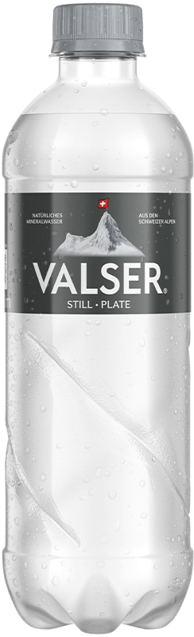
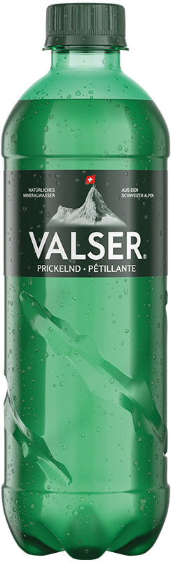
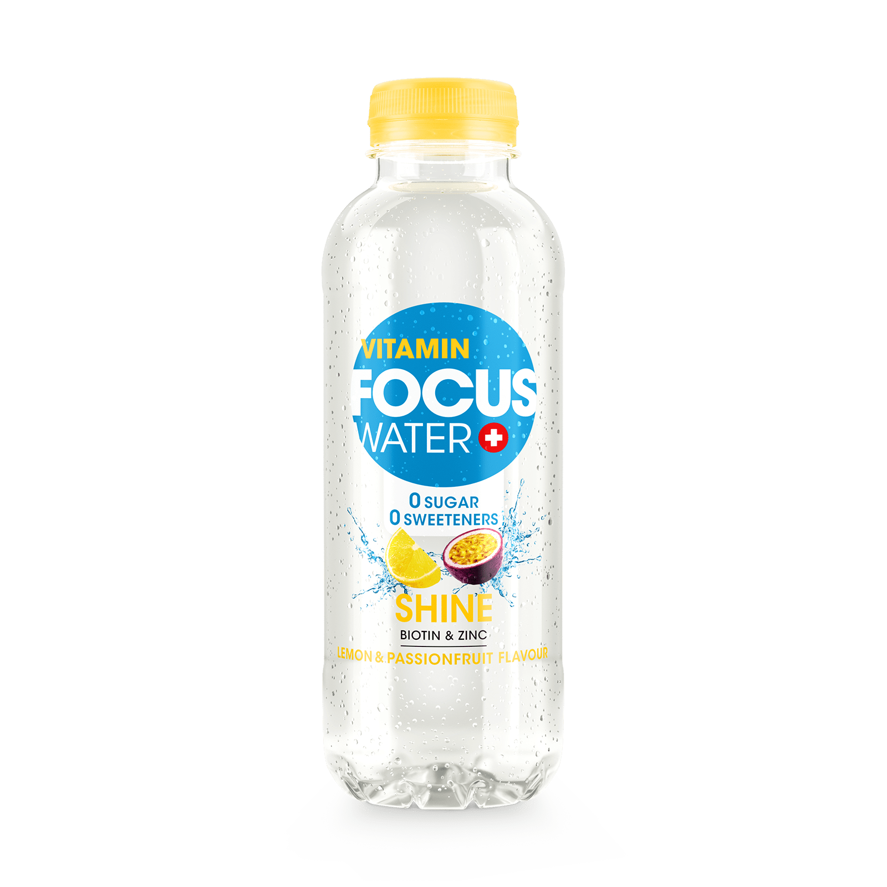
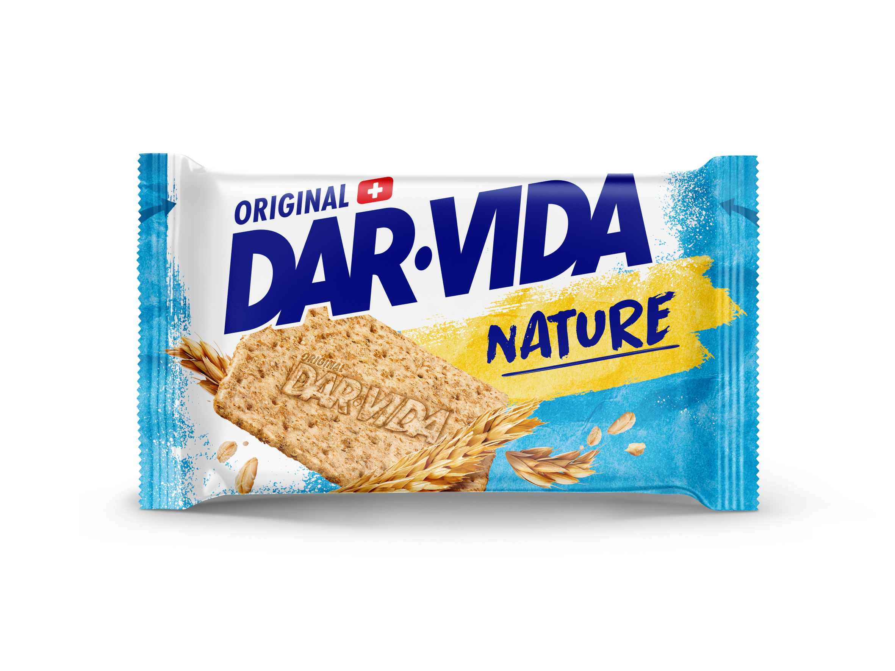
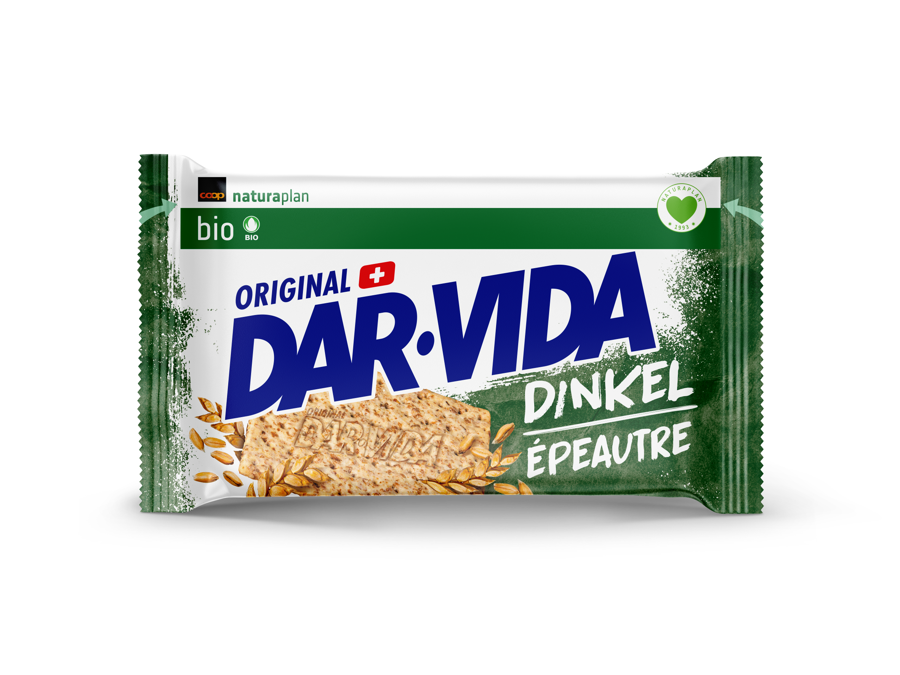
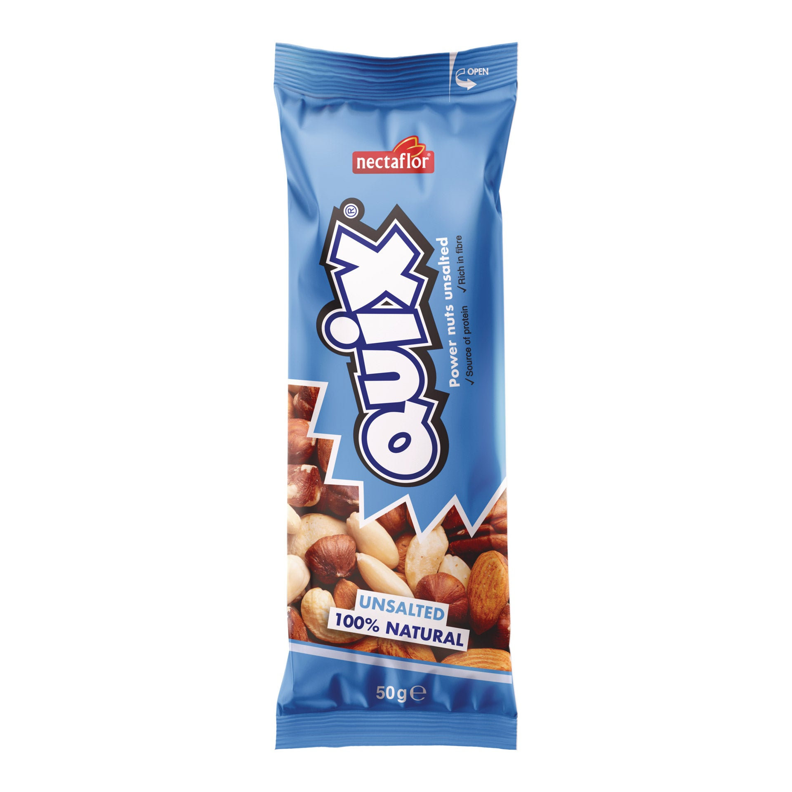
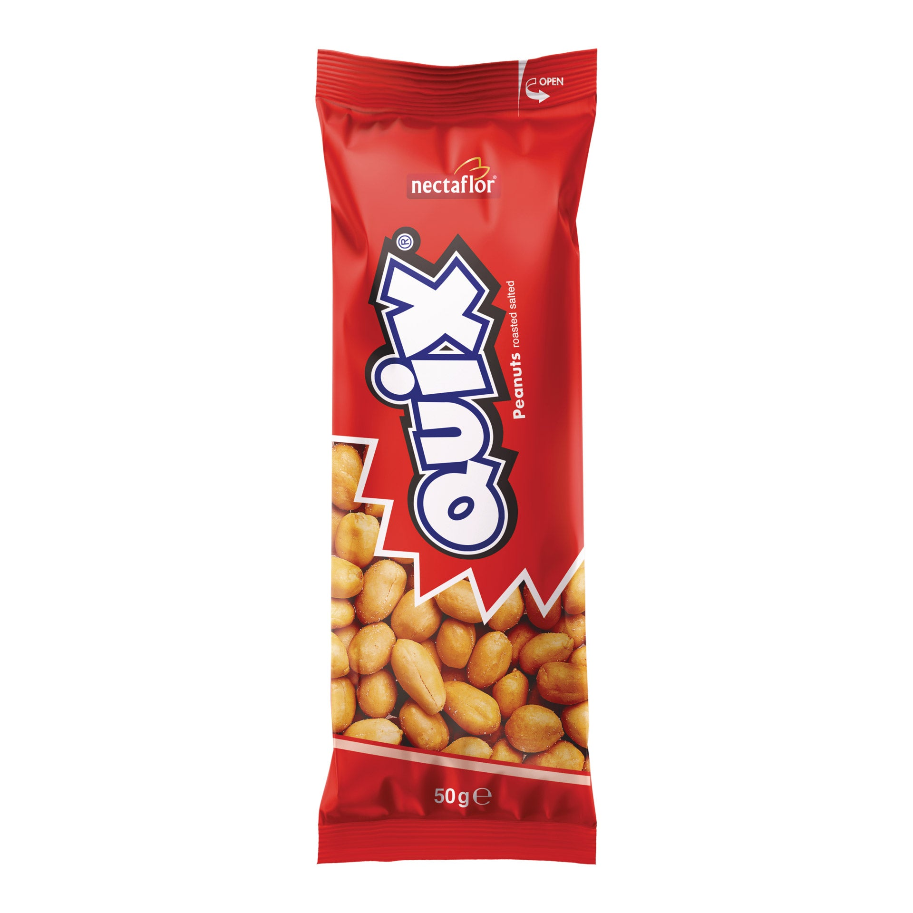

H1 · Card size only
Valser Still
Keep under 122 × 400 CSS px at 2×. Match the delivered 500 ml bottle and label generation.
Open original imageFive high-resolution selections, two smaller official bottle images, one missing packshot. These are original brand files, visually reviewed on 14 September 2026. No packaging has been generated or altered.
Research preview only. Exact supplied wrappers and commercial reuse permissions still need confirmation. Read quality limits, source links and outstanding checks.
Preview the original backgrounds and transparency:

Keep under 122 × 400 CSS px at 2×. Match the delivered 500 ml bottle and label generation.
Open original image
Keep under 122 × 400 CSS px at 2×. Larger master needed for hero placement.
Open original image
Correct single bottle and flavour. Original shadow and wide transparent margins retained.
Open original imageNo substitute image. Request the original front-facing 50 g pack from Coop.
Exact product source
Sharp official artwork. Confirm the depicted wrapper matches the 41.6 g vending pocket.
Open original image
Correct Dinkel artwork with genuine Coop branding. Confirm the 41.5 g pocket wrapper.
Open original image
Exact 50 g wrapper. Use on white cards; the product remains conditional in the nutrition research.
Open original image
Exact 50 g wrapper. Clean original photo; nutritional approval remains conditional.
Open original image{kind=link}
{kind=link}
{kind=link}
{kind=link}
{kind=link}
{kind=link}
{kind=link}